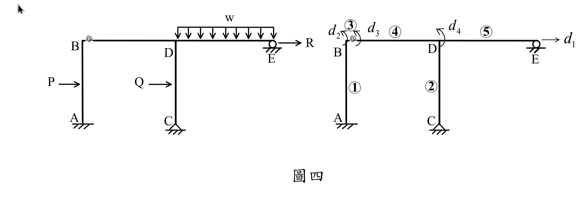
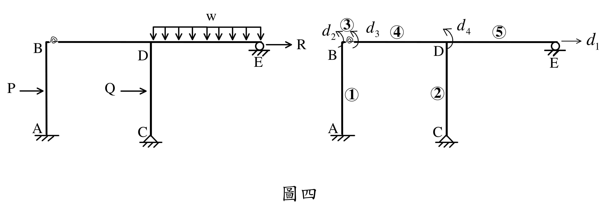
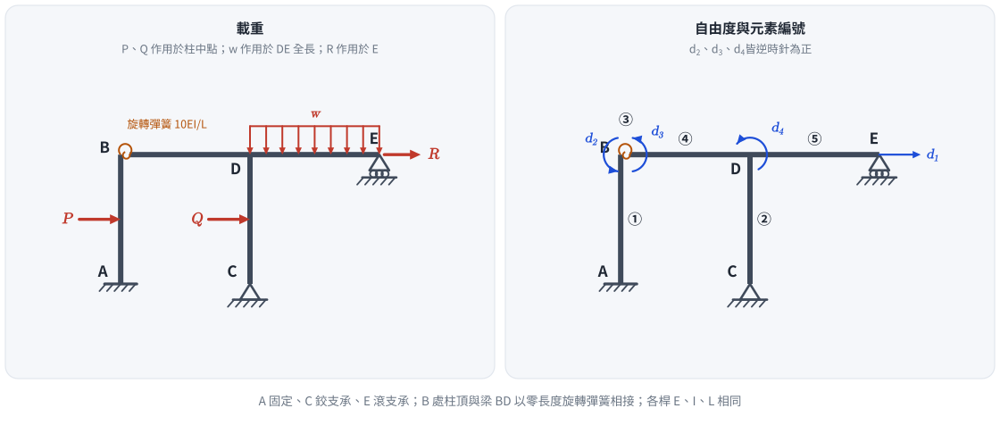
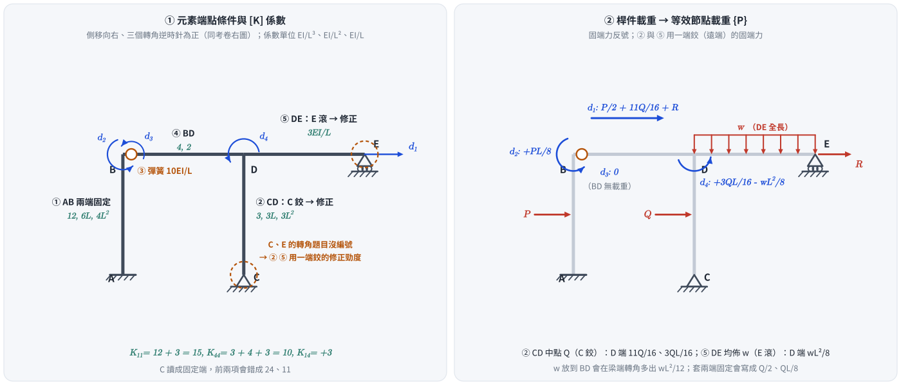

📄 題目正本（考卷原文、附圖與判讀清單；不含解法）
SA-2019-4 題目正本
本檔只記錄考卷上寫了什麼、圖上畫了什麼，不含任何解法。解析見同資料夾
SA-2019-4.md。
判讀清單經使用者確認前，狀態為「待確認」；確認後本檔原則上不再修改（改動須回考卷原圖並記 log）。
| 項目 | 內容 |
|---|---|
| 考卷 | raw/exams/SA-2019_結構學.pdf，第 3 頁，第四題（圖四） |
| 考年 | 2019（民國 108 年）專技高考結構工程技師「結構學」 |
| 配分 | 25 分 |
| 附圖 | SA-2019-4-fig-1.png、SA-2019-4-fig-2.png |
| 判讀狀態 | 已確認（2026-11-05 使用者確認。原轉錄：2026-11-05 轉錄；PyMuPDF 110 dpi 整頁＋250–800 dpi 局部放大、PDF 向量座標；盲讀於開啟解析前完成） |
1. 考卷原文（逐字）
四、考慮圖四之構架，假設各構件之軸向變形很小可以忽略，各桿件之楊氏模數都為 E、斷面二次矩都為 I 且長度都為 L；外力 P 及 Q 作用於柱之中點。如圖四所示，梁 BD 接到柱 AB 採半剛性接頭，以旋轉彈簧模擬之（可當作零長度），旋轉彈簧勁度假設為 10 EI/L（EI，L 為梁、柱構件性質）。若以勁度法表示該構架平衡方程式，可寫為 [K]{D} = {P}，其中 {D} 為位移向量，依序包括水平位移 d₁、B 點左側旋轉角 d₂、B 點右側旋轉角 d₃ 及 D 點旋轉角 d₄ 共四個自由度；[K] 為結構勁度矩陣；{P} 為外力向量。試求 [K] 及 {P}；求 [K] 前，先寫出每個元素之勁度矩陣再組合得 [K]，旋轉彈簧視為一個元素。（25 分）
2. 考卷給的公式、附表與參數
- 考卷沒有給任何參考公式或附表。
- 旋轉彈簧勁度 10 EI/L；各桿 E、I、L 相同；忽略軸向變形（題文）。
- 考卷沒有給數值。
- 卷首注意事項：可以使用電子計算器。不必抄題，作答時請將試題題號及答案依照順序寫在試卷上，於本試題上作答者，不予計分。本科目除專門名詞或數理公式外，應使用本國文字作答。
- 考試時間：2 小時。
3. 附圖

證據圖 SA-2019-4-fig-1.png

證據圖 SA-2019-4-fig-2.png（2026-11-05 自考卷重新擷取 500 dpi，無游標）
圖面文字照錄：w、B、D、E、R、P、Q、A、C、d₂、③、d₃、④、d₄、⑤、d₁、①、②、圖四
4. 判讀清單
| # | 項目 | 判讀 | 圖上／題文依據 | 把握 |
|---|---|---|---|---|
| 1 | 幾何 | A、C 為柱底；AB、CD 柱長 L；BD、DE 梁長 L；B、D、E 同高程 | 題文「長度都為 L」；附圖無尺寸線 | 確定 |
| 2 | 支承 A | 固定端（剖線） | 附圖 | 確定 |
| 3 | 支承 C | 鉸支承（三角形） | 附圖 | 確定 |
| 4 | 支承 E | 滾支承（圓），可水平移動 | 附圖 | 確定 |
| 5 | B 接頭 | 柱頂與梁 BD 之間為零長度旋轉彈簧，k = 10 EI/L | 題文；附圖彈簧符號 | 確定 |
| 6 | 節點 D | 梁 BD、DE 與柱 CD 剛接 | 附圖 | 確定 |
| 7 | 載重 | P 向右作用 AB 中點；Q 向右作用 CD 中點；w 向下 DE 全長；R 向右作用 E | 題文；附圖 | 確定 |
| 8 | 自由度 | d₁：水平位移（向右，畫在 E）；d₂：B 左側（柱頂）轉角；d₃：B 右側（梁端）轉角；d₄：D 轉角；三個轉角箭頭皆逆時針 | 題文；800 dpi 箭頭方向 | 確定 |
| 9 | 元素編號 | ① AB、② CD、③ 旋轉彈簧、④ BD、⑤ DE | 右圖圈號 | 確定 |
| 10 | 所求 | 各元素勁度矩陣、組合 [K]、外力向量 {P} | 題文 | 確定 |
| 11 | 證據圖 | 舊截圖 fig-1：左上角有滑鼠游標（箭頭），圖面縮得很小（左右兩圖擠在 2494 px 寬內、線很細）；新增 fig-2（2026-11-05 自考卷重新擷取 500 dpi） | — | 確定 |
轉錄：2026-11-05（SA-U2-4 題目正本推廣・批 1）
確認：2026-11-05 使用者確認
考題編號：SA-2019-4
主分類： SA-U2-4 靜不定結構之矩陣分析法
副分類： 無
標籤： 勁度矩陣 半剛性接頭 旋轉彈簧 節點載重向量
1. 題目（考卷原文見題目正本）
考卷原文、公式／附表、附圖與判讀清單（已確認）見
SA-2019-4-problem.md。本節只列解題時最容易讀錯的地方與本解使用的記號；題意以題目正本為準。

重繪自考卷附圖，依判讀清單 #1–#11 重繪。攔：C 讀成固定端、B 讀成剛接、轉角正向讀反。
常見誤讀
| 項目 | 正確判讀 | 常見誤讀 |
|---|---|---|
| C 支承 | 鉸支承 | 固定端 |
| B 接頭 | 柱頂與梁之間的旋轉彈簧 10EI/L（零長度） | 剛接 |
| d₂、d₃、d₄ | 皆逆時針為正 | 順時針 |
| 均佈 w 範圍 | DE 梁全長（D 到 E） | BD 梁 |
本解記號： d₁ 向右、d₂–d₄ 逆時針為正（與考卷右圖一致）；桿端彎矩與固端彎矩皆以逆時針為正。
勘誤（2026-11-05）：舊版 §3–§4 把 C 當固定端、把 w 放在 BD 梁、轉角取順時針為正，[K] 與 {P} 隨之錯誤；已依題目正本重算（詳見頁尾修正日期）。
2. 考題核心精神與出題者意圖 (Core Concepts & Examiner's Intent)
本題為標準的直接勁度法 (Direct Stiffness Method) 組裝題，題目已把自由度與元素編號都指定好，考的是三件事：
- 半剛性接頭：B 點柱頂與梁端以零長度旋轉彈簧相接，兩側轉角不同，必須各給一個自由度（$d_2$、$d_3$），彈簧本身當成一個連接兩轉角的元素。
- 端點條件的修正勁度：題目只給 4 個自由度，C 柱底為鉸支承、E 為滾支承，兩處轉角都沒有編號，所以柱 CD（下端鉸）與梁 DE（右端鉸）都要用一端鉸接的修正勁度（或寫全矩陣再靜態凝縮）。
- 等效節點載重：柱中點水平力 P、Q 與 DE 上的均佈 w 要換成固端力再反號；柱 CD 與梁 DE 的固端力要用「一端固定、一端鉸接」的值（$3QL/16$、$11Q/16$、$wL^2/8$），不是兩端固定的 $QL/8$、$wL^2/12$。
3. 解題戰略地圖與陷阱分析 (Strategic Roadmap & Trap Analysis)
- 確立自由度（題目指定）：$d_1$ 梁層水平位移（向右）；$d_2$ B 點柱頂轉角；$d_3$ B 點梁端轉角；$d_4$ D 點轉角——三個轉角在考卷右圖皆為逆時針。忽略軸向變形，B、D、E 同步側移 $d_1$，各節點無垂直位移。
- 元素與對應自由度：
- ① 柱 AB（A 固定）：$[d_1, d_2]$
- ② 柱 CD（C 鉸）：$[d_1, d_4]$，修正勁度
- ③ 旋轉彈簧：$[d_2, d_3]$
- ④ 梁 BD：$[d_3, d_4]$（兩端無相對側移）
- ⑤ 梁 DE（E 滾支）：$[d_4]$，修正勁度
- 組裝：依自由度標籤把元素係數疊加成 $4\times4$。
- 外力向量：$\{P\} = \{P_{節點}\} - \{F_{固端}\}$。
陷阱分析：
- 陷阱 1：C 讀成固定端。 C 柱底畫的是三角形鉸支承（A 才是剖線固定端）。讀成固定端會把 ② 寫成 $12EI/L^3$、$6EI/L^2$、$4EI/L$，$K_{11}$ 由 15 變 24、$K_{44}$ 由 10 變 11，且 Q 的固端力也跟著錯。
- 陷阱 2：w 放錯梁。 均佈 w 的箭頭排在 D 到 E 之間，BD 梁沒有載重；放到 BD 會在 $P_3$ 多出 $wL^2/12$。
- 陷阱 3：轉角正向。 考卷右圖三個轉角箭頭皆逆時針。若改用順時針，矩陣中「側移–轉角」耦合項全部變號；作答前先依圖定正向。
- 陷阱 4：用兩端固定的固端力。 ② 與 ⑤ 都是一端鉸接，固端彎矩是 $3QL/16$、$wL^2/8$，剪力是 $11Q/16$（固定端側）。
4. 步驟化詳細計算過程 (Step-by-Step Detailed Calculation)
Step 1：寫出各元素之勁度矩陣
各桿長 $L$、$EI$ 相同；$d_1$ 向右、轉角逆時針為正。柱的側移–轉角耦合：柱頂向右平移 $\Delta$ 時弦轉角為順時針 $\Delta/L$，由傾角變位式 $M = \frac{2EI}{L}(2\theta_i+\theta_j-3\psi)$、$\psi=-\Delta/L$ 得柱頂所需逆時針彎矩 $+\frac{6EI}{L^2}\Delta$（兩端固定）或 $+\frac{3EI}{L^2}\Delta$（另一端鉸）。
1. 元素 ① — 柱 AB（A 固定），自由度 $[d_1, d_2]$：
$$[k^{(1)}] = \begin{bmatrix}
\dfrac{12EI}{L^3} & \dfrac{6EI}{L^2} \\[6pt]
\dfrac{6EI}{L^2} & \dfrac{4EI}{L}
\end{bmatrix}$$
2. 元素 ② — 柱 CD（C 鉸，修正勁度），自由度 $[d_1, d_4]$：
$$[k^{(2)}] = \begin{bmatrix}
\dfrac{3EI}{L^3} & \dfrac{3EI}{L^2} \\[6pt]
\dfrac{3EI}{L^2} & \dfrac{3EI}{L}
\end{bmatrix}$$
（由兩端固定的 $6\times6$ 柱元素對 C 端轉角靜態凝縮而得。）
3. 元素 ③ — 旋轉彈簧，自由度 $[d_2, d_3]$，$k_r = 10EI/L$：
$$[k^{(3)}] = \frac{10EI}{L}\begin{bmatrix} 1 & -1 \\ -1 & 1 \end{bmatrix}$$
4. 元素 ④ — 梁 BD，自由度 $[d_3, d_4]$：
$$[k^{(4)}] = \frac{EI}{L}\begin{bmatrix} 4 & 2 \\ 2 & 4 \end{bmatrix}$$
5. 元素 ⑤ — 梁 DE（E 滾支，修正勁度），自由度 $[d_4]$：
$$[k^{(5)}] = \begin{bmatrix} \dfrac{3EI}{L} \end{bmatrix}$$
Step 2：組合結構勁度矩陣 $[K]$
$$[K] = \frac{EI}{L^3} \begin{bmatrix} 12+3 & 6L & 0 & 3L \\ 6L & (4+10)L^2 & -10L^2 & 0 \\ 0 & -10L^2 & (10+4)L^2 & 2L^2 \\ 3L & 0 & 2L^2 & (3+4+3)L^2 \end{bmatrix} = \frac{EI}{L^3} \begin{bmatrix} 15 & 6L & 0 & 3L \\ 6L & 14L^2 & -10L^2 & 0 \\ 0 & -10L^2 & 14L^2 & 2L^2 \\ 3L & 0 & 2L^2 & 10L^2 \end{bmatrix}$$
Step 3：計算外力向量 $\{P\}$
$\{P\}$ = 直接作用於自由度的外力 − 固端力（固端力指桿件兩端鎖住時，支承作用在桿端的力；逆時針、向右為正）。
-
柱 ① AB，中點水平力 P（兩端固定）：固端水平剪力兩端各 $P/2$（向左）；B 端固端彎矩 $-PL/8$（順時針）。
→ 等效：$d_1$：$+P/2$；$d_2$：$+PL/8$。 -
柱 ② CD，中點水平力 Q（C 鉸、D 固定）：D 端（固定端）固端剪力 $11Q/16$（向左）、C 端 $5Q/16$；D 端固端彎矩 $-3QL/16$（順時針）。
→ 等效：$d_1$：$+11Q/16$；$d_4$：$+3QL/16$。 -
梁 ⑤ DE，均佈 w（D 固定、E 鉸）：D 端固端彎矩 $+wL^2/8$（逆時針）。
→ 等效：$d_4$：$-wL^2/8$。 -
梁 ④ BD：無載重，對 $d_3$ 無貢獻。
- 節點直接外力：E 點水平力 R，作用方向與 $d_1$ 相同 → $+R$。
$$P_1 = R + \frac{P}{2} + \frac{11Q}{16},\qquad P_2 = \frac{PL}{8},\qquad P_3 = 0,\qquad P_4 = \frac{3QL}{16} - \frac{wL^2}{8}$$

圖 2 左：五個元素的端點條件與貢獻給 $[K]$ 的係數——C、E 的轉角題目沒有編號，柱 ② 與梁 ⑤ 用一端鉸的修正勁度；右：桿件載重反號後落在 $d_1$–$d_4$ 的等效節點載重。這張圖攔三種錯：把 C 讀成固定端（$K_{11}$、$K_{44}$ 變 24、11）、把 w 放到 BD 梁、對一端鉸的桿件套用兩端固定的固端力。
Step 4：檢核
- 對角項物理意義：$K_{11}$ 為兩柱側向勁度和 $12+3 = 15\,EI/L^3$（固定–固定柱與鉸–固定柱，梁層轉角鎖住時）；$K_{44} = 3+4+3 = 10\,EI/L$（CD 修正、BD、DE 修正）。
- 對稱性：$[K]$ 對稱。
- 程式驗算：以平面剛架總位能法、保留 C、E 轉角為自由度組 $6\times6$ 勁度矩陣後靜態凝縮，得到相同的 $[K]$ 與 $\{P\}$。
5. 最終答案
$$[K] = \frac{EI}{L^3} \begin{bmatrix} 15 & 6L & 0 & 3L \\ 6L & 14L^2 & -10L^2 & 0 \\ 0 & -10L^2 & 14L^2 & 2L^2 \\ 3L & 0 & 2L^2 & 10L^2 \end{bmatrix}, \qquad \{P\} = \begin{Bmatrix} R + \dfrac{P}{2} + \dfrac{11Q}{16} \\[6pt] \dfrac{PL}{8} \\[6pt] 0 \\[6pt] \dfrac{3QL}{16} - \dfrac{wL^2}{8} \end{Bmatrix}$$
（$d_1$ 向右、$d_2$–$d_4$ 逆時針為正。若改以順時針為正，第 1 列／行與轉角的耦合項及 $P_2$–$P_4$ 變號，對角項不變。）
- 作答方式補充：題文要求「先寫出每個元素之勁度矩陣再組合」。② 與 ⑤ 也可寫成含 C、E 轉角的完整元素矩陣，組成 $6\times6$ 後再對 C、E 轉角靜態凝縮，結果相同。
修正日期：2026-11-05（§1 改為指向題目正本並放重繪附圖（figs/SA-2019-4-fig-1-problem.svg）、加常見誤讀；圖由 gen_SA-2019-4.py 產生，可重跑）
修正日期：2026-11-05（勘誤：依題目正本判讀 #3 C 為鉸支承、#7 w 作用於 DE、#8 轉角逆時針，重寫 §2–§5。[K]：K₁₁ 24 → 15 EI/L³、K₁₂ −6 → +6 EI/L²、K₁₄ −6 → +3 EI/L²、K₄₄ 11 → 10 EI/L；{P}：P₁ R+(P+Q)/2 → R+P/2+11Q/16、P₂ −PL/8 → +PL/8、P₃ wL²/12 → 0、P₄ −QL/8−wL²/12 → 3QL/16−wL²/8。驗證：平面剛架總位能法（保留 C、E 轉角後凝縮）重算 16 項（[K] 上三角 10＋{P} 4＋修正勁度 2）MISMATCHES: 0（腳本 wiki/queries/勘誤驗算-SA-U2-4-批1/errata_check.py）；來源 wiki/queries/盲解比對-SA-U2-4-批1-2026-11-05.md）
圖解補繪：2026-11-05（向量圖，腳本 gen_SA-2019-4_fem.py，由元素係數組裝後 assert 解析 [K]、{P}，可重跑）